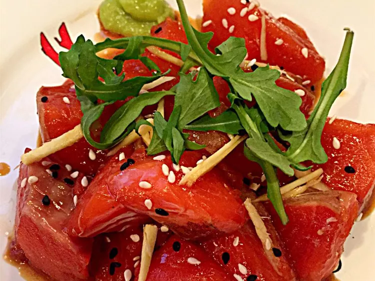

Tuna Tartare

This tuna tartare recipe is amazingly simple. It takes only 10 minutes and tastes like it came from a 5-star restaurant!
Ingredients
- 3 tablespoons olive oil
- 1 tablespoon sesame seeds
- ¼ teaspoon wasabi powder
- ⅛ teaspoon cracked black pepper
- pound sushi grade tuna, finely diced
- sliced French bread